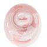

Bacterial vaginosis
Rx :
Tab Metronidazole 500mg N=14 BD for 7 days🔸
Cap Clindamycin 300mg N=14 BD for 7days🔹
Tab Tinidazole 500mg N= 10🔸
4tab(2gr) daily for 2 days or
2tab(1gr) daily for 5 days
Vaginal gel Metronidazole daily for 5days 🔹
Vaginal cream Clindamycin qhs for 7days🔸
Vaginal tab Clindamycin 100mg qhs for 3 days🔹
هر کدام از رژیم های دارویی فوق را میتوان برای بیمار استفاده کرد
نکته : کلیندامایسین و مترونیدازول هر دو در دوران بارداری safe هستند.
نکته : در خانم های شیرده، حین درمان با قرص مترونیدازول تا ۲۴ ساعت بعد از آخرین دوز از شیردهی کودک خودداری شود. پس ترجیحا از درمان موضعی استفاده کنید
ترشحات هموژن و رقیق به رنگ سفید مایل به خاکستری.
شکایات شایع بیماران:
✳️شایع ترین :بوی ماهی فاسد یا کپک که بعد از رابطه جنسی بدبو تر می شود
✳️خروج ترشحات سفید - خاکستری
✳️دیزوری
✳️دیسپارونی
✳️خارش
✳️گاها می تواند بی علامت هم باشد
1️⃣ واژینیت کاندیدایی
2️⃣ واژینیت تریکومونایی
3️⃣ واژینیت آتروفیک
4️⃣ سرویسیت
5️⃣ گونوره
6️⃣ هرپس سیمپلکس
7️⃣ عفونت کلامیدیایی
Mechanical or chemical irritation 8️⃣
9️⃣ جسم خارجی
🔟 ترشحات طبیعی
1️⃣1️⃣ PID
1️⃣2️⃣ UTI